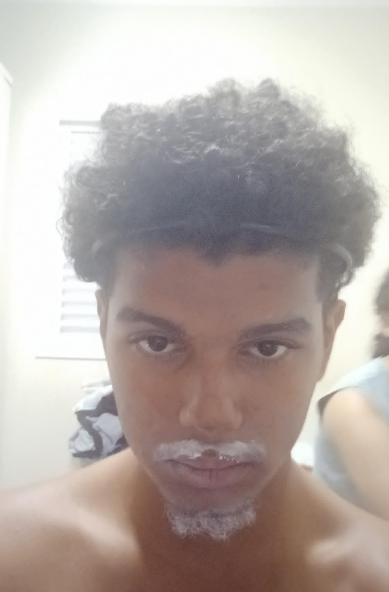

BIOGRAFIA

|
Nascido e crescido na grande metropole de Xique-Xique- Bahia, Luiz Guilherme Martins, mais conhecido com Luiz Bahia teve uma infância brilhante, aos 2 anos descobriu o seu dom no futebol, e aos 4 ganhou a campeonato mundial de futebol de xique-xique cinco vezes no mesmo ano. Não satisfeito no ano seguinte ganhou o concurso de beleza masculina internacional de xique-xique. Luiz Bahia saiu na capa da revista xique (revista mais de popular de xique-xique) inúmeras vezes, se consagrando como a figura mais emblêmatica de xique-xique . Aos 8 anos fez uma turnê mundial por todo nordeste, passou em cidade bem conhecidas como: Tururu-Ceará, Pau dos Ferros-RN, Bodocó- Pernambuco e Paus-Piauí. Após anos sendo a maior celebridade de xique-xique, Luiz Bahia fez uma decisão que mudaria sua vida, se mudou para São Paulo onde fez a prova do vestibulinho etec e representou Xique-Xique na prova e passou no curso de desenvolvimento de sistemas e hoje em dia alegra a vida de seus amigos com suas brincadeiras super engraçadas na etec ermelinda.
|